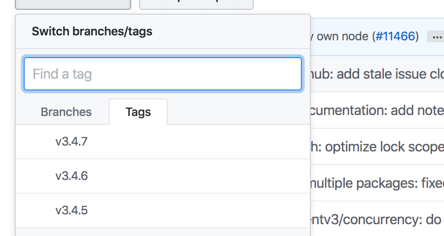

最近几个月，或者最近一年，使用etcd做开发的朋友，如果你开启了go module的功能的话，难道没有出现翻车的现象吗？或者， 你go get -u .更新一下项目依赖试试看。
因为我使用visual studio code的方式是打开整个GOPATH文件夹，而gopls 对于整个GOPATH并不友好，非常的慢，所以我设置了全局变量GO111MODULE=off，还是采用传统的老的库依赖方式开发。
但是我并不排斥使用go module，并且觉得它对解决库依赖的冲突至关重要，所以我一般在项目中也会时不时的开启go module,更新一下go.mod。但是目前看来go module的推广起来问题还是重重，主要包括下面几个原因:
go module本身的bug
使用go module的项目使用方式有问题
一些库没有采用go module
由于go module的一些bug,以及开源项目使用go module的错误姿势，go module模式下导致使用一些代码库困难重重。我们以etcd为例，看看目前使用etcd的翻车现场。
翻车例子
假如看了很多go module的励志文章，信心满满，准备使用etcd开发一些分布式的应用，就面临着一些库的抉择问题。很显然，相对于zookeeper在java生态圈的地位，在Go生态圈我们自然会选择etcd去做开发。
那么现在第一步，我们创建一个文件夹，生成go module文件:
1
2
3
➜ workspace mkdir abc && cd abc
➜ abc go mod init example.com/m
go: creating new go.mod: module example.com/m
加入etcd库:
1
2
3
4
5
6
7
8
9
10
11
12
13
14
15
16
17
➜ abc go get -u -v go.etcd.io/etcd
go: go.etcd.io/etcd upgrade => v3.3.20 +incompatible
go: finding module for package github.com/coreos/etcd/etcdmain
go: found github.com/coreos/etcd/etcdmain in github.com/coreos/etcd v3.3.20 +incompatible
go: finding module for package sigs.k8s.io/yaml
go: finding module for package google.golang.org/grpc/codes
go: finding module for package github.com/coreos/pkg/capnslog
go: finding module for package google.golang.org/grpc/metadata
......
go: found github.com/golang/groupcache/lru in github.com/golang/groupcache v0.0.0 -20200121045136 -8 c9f03a8e57e
go: go.etcd.io/etcd imports
github.com/coreos/etcd/etcdmain imports
github.com/coreos/etcd/etcdserver imports
github.com/coreos/etcd/mvcc/backend imports
github.com/coreos/bbolt: github.com/coreos/bbolt@v1.3.4 : parsing go.mod:
module declares its path as: go.etcd.io/bbolt
but was required as: github.com/coreos/bbolt
翻车了 。看起来coreos维护的bbolt库声明它的module名称是go.etcd.io/bbolt，结果在使用它的时候使用的package path是github.com/coreos/bbolt，包名不一致啊(etcd#11720 , etcd#11739 、etcd#11749 )。
显然是etcd使用的是错误的bbolt的路径。冷静下来，考虑解决办法。幸好，go module提供replace的方法，我们可以使用下面的方法替换:
1
replace github.com /coreos/bbolt => go .etcd.io/bbolt v1.3.4
现在我们再执行go get -u -v go.etcd.io/etcd,貌似bbolt的问题没有了，但是新问题又来了：
1
2
3
4
5
6
7
8
9
10
11
12
13
14
15
16
17
18
go: go.etcd.io/etcd upgrade => v3.3.20 +incompatible
go: finding module for package github.com/coreos/etcd/etcdmain
go: found github.com/coreos/etcd/etcdmain in github.com/coreos/etcd v3.3.20 +incompatible
go: finding module for package github.com/coreos/go-systemd/util
......
google.golang.org/grpc/resolver/dns
github.com/coreos/etcd/clientv3/balancer/resolver/endpoint
google.golang.org/grpc/balancer/base
../../go/pkg/mod/github.com/coreos/etcd@v3.3.20 +incompatible/clientv3/balancer/resolver/endpoint/endpoint.go:114 :78 : undefined: resolver.BuildOption
../../go/pkg/mod/github.com/coreos/etcd@v3.3.20 +incompatible/clientv3/balancer/resolver/endpoint/endpoint.go:182 :31 : undefined: resolver.ResolveNowOption
......
github.com/coreos/etcd/pkg/logutil
../../go/pkg/mod/github.com/coreos/etcd@v3.3.20 +incompatible/clientv3/balancer/picker/err.go:37 :44 : undefined: balancer.PickOptions
../../go/pkg/mod/github.com/coreos/etcd@v3.3.20 +incompatible/clientv3/balancer/picker/roundrobin_balanced.go:55 :54 : undefined: balancer.PickOptions
github.com/grpc-ecosystem/grpc-gateway/runtime
.....
惊不惊喜，意不意外。跨过了一座山，趟过了一条河，又遇到了一座山。我精神有点恍惚了，作为一个知名的使用量巨大的开源项目，默认go get不应该轻轻松松搞定的吗,即使有bug,这明显的问题应该早就修复了啊。搜一下issue,你会看到etcd#11563 、etcd#11650 、etcd#11707
Etcd的代码和新版本的grpc(v1.27.0)冲突,再次施展替换大法，让项目使用老的grpc:
1
2
3
replace (
google.golang.org /grpc => google.golang.org /grpc v1.26 .0
)
重新go get -u -v go.etcd.io/etcd,怀着十二分的忐忑，观察下载结果，一顿刷屏之后，终于成功了，泪流满面，面无血色，色即是空，空即是色。
到此告一段落。因为我们没有使用其它的库，要是依赖其它的库，而其它库也在使用某个版本的etcd,或者它没有使用go module,问题不敢想...,不过还好我们的例子还没有使用其它库，目前是依赖了一个etcd。
现在你肯定会有一个疑问，这个问题已经有很多issue,难道etcd没有修改吗？
检查我们的go.mod文件，发现一堆的indirect引用的库，居然还有两个etcd:
1
2
3
4
5
6
......
github.com/coreos/etcd v3.3.20+incompatible // indirect
go.etcd.io/etcd v3.3.20+incompatible // indirect
......
google.golang.org/grpc v1.28.1 // indirect
......
命名引入了go.etcd.io/etcd,咋还附赠了一个github.com/coreos/etcd?而且这俩的代码不是都一样的吗？
go.etcd.io/etcd之所以显示为indirect是因为我们的代码中还没有引用这个package。 在当前文件夹下创建abc.go文件:
1
2
3
package m
import _ "go.etcd.io/etcd"
然后go mod tidy就可以看到go.etcd.io/etcd的indirect标记没了。
1
2
3
4
5
6
......
github.com/coreos/etcd v3.3.20+incompatible // indirect
go.etcd.io/etcd v3.3.20+incompatible // indirect
......
google.golang.org/grpc v1.28.1 // indirect
......
但是我想默默地问一句，为什么github.com/coreos/etcd还存在？它被标记为indirect,肯定是某个库引用它了。是谁？
go mod why github.com/coreos/etcd是没有用的:
1
2
3
➜ abc go mod why github.com/coreos/etcd
(main module does not need package github.com/coreos/etcd)
要使用go mod graph找一下，执行这个命名筛选一下：
1
2
3
➜ abc go mod graph|grep github.com/coreos/etcd
example.com/m github.com/coreos/etcd@v3.3.20 +incompatible
github.com/spf13/viper@v1.4.0 github.com/coreos/etcd@v3.3.10 +incompatible
原来是`github.com/spf13/viper@v1.4.0 搞的鬼，github.com/coreos/etcd/etcdmain使用了github.com/spf13/cobra@v0.0.7 库,cobra又使用viper的1.4.0版本，而viper@v1.4.0 又使用了etcd@v3.3.10 。真优秀，绕了一圈又绕回来了，循环依赖啊。但是已经面目全非，原先人家是小甜甜(go.etcd.io/etcd),现在却成了牛夫人(github.com/coreos/etcd`)。
暂且不管它们了，好歹至少我们的项目已经没啥冲突了，可以继续开发了。但是我心中还有隐隐有一个声音在呼唤，刨根问底，永不放弃。责任感和历史使命促使我们再问一句： 目前etcd的最高版本是多少了？
其实很好查，到github上查看项目的tags:

可以看到目前etcd项目的最高版本已经到了3.4.7,可我们为什么默认拉下来的版本还是历史久远的v3.3.20+incompatible。为什么？
首先，这个incompatible是啥子意思？依照这个解释 ,在特定的场景下会加上incompatible标签。
既然etcd都已经到了3.4.7了，我们使用这个最新的版本:
1
2
3
➜ abc go get -u -v go.etcd.io/etcd@3.4 .7
get "go.etcd.io/etcd" : found meta tag get.metaImport{Prefix:"go.etcd.io/etcd" , VCS:"git" , RepoRoot:"https://github.com/etcd-io/etcd" } at //go.etcd.io/etcd?go-get=1
go get go.etcd.io/etcd@3.4 .7 : go.etcd.io/etcd@3.4 .7 : invalid version: unknown revision 3.4 .7
What? 明明官方网站了已经有3.4.7版本了，咋获取不到？
1
GO111MODULE=on go list -m -json -versions go.etcd.io/etcd@latest
显示最新的版本是v3.3.20+incompatible:
1
2
3
4
5
6
7
......
"v3.3.18+incompatible" ,
"v3.3.19+incompatible" ,
"v3.3.20+incompatible"
],
"Time" : "2020-04-01T17:49:03Z"
}
如果禁用GOPROXY,最新版本是v2.3.8+incompatible:
1
2
3
4
5
6
"v2.3.6+incompatible" ,
"v2.3.7+incompatible" ,
"v2.3.8+incompatible"
],
"Time" : "2017-02-16T03:25:01Z"
}
pkg.go.dev也没有显示最新的版本：
不管怎样，貌似都没有3.4.7版本。实在没招了，etcd的issue中有相关的讨论:etcd#11154 ,怨声载道，甚至有群众说还好目前大家可以拿新型肺炎病毒搪塞作者不关心这个bug。我看这个bug从去年9月份就开始了，目前没有还没有处理。目前考虑到的处理方法有两个：
删除etcd库中的go.mod: 直接有效，但是和go官方极力推广go module相背驰
定义模版为go.etcd.io/etcd/v3。但是这是令人讨厌的事情，go module定义了v0、v1和v2 module,将module定义整的非常的复杂，也强迫库的开发者非要在go.mod定义版本信息。 或许，etcd的作者通过这种方式，来抵制go的这种设计方式。
据说，这个问题会在 etcd v3.5.0版本中解决，大家拭目以待吧， 毕竟， 你们已经都等了几个月了，不在乎再多等些日子。
折腾了一下午，伤痕累累，累觉不爱。